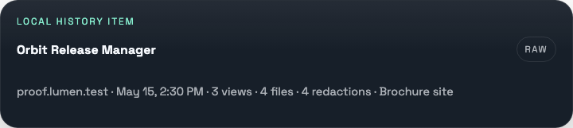

Evidence of completeness
Lumen measures the stitched page coverage and records whether the capture reached the tail, so a missing bottom is visible instead of silently shipped.
Local beta · Chrome extension
Capture the whole page.
Know you got the whole page.
Lumen turns whole pages and selected areas into review-ready evidence: verified captures, transparent lasso crops, timed monitoring, and a real photo library that stays on your device.

One run can include
Beyond a tall screenshot
Conventional full-page tools stop when a file downloads. Lumen treats that file as the start of the review workflow—checking coverage, removing noise, protecting private details, and keeping the page context beside it.
Lumen measures the stitched page coverage and records whether the capture reached the tail, so a missing bottom is visible instead of silently shipped.
Scan visible sensitive content, add manual boxes, and review the protected regions before saving an irreversibly redacted output.
Keep the source URL, viewport, dimensions, time, page signals, notes, and output details in a portable manifest next to the image.
A capture you can inspect
Explore the three checks Lumen brings into one capture run. Each step stays visible, reviewable, and under your control.
 Desktop
Tablet
Mobile
Desktop
Tablet
Mobile
Responsive evidence
Save desktop, tablet, and mobile views as one named run. Review them together instead of rebuilding the same capture three times.
Local capture toolkit
Lumen goes beyond one-off downloads without turning your captures into a cloud product. The library, lasso output, and timed-area plans all run inside the extension.
Browse actual image previews stored in Lumen's on-device photo library. Search, filter, and favorite captures while the full-resolution originals remain in Chrome Downloads.
Use a rectangle for a clean crop or draw a freeform lasso. Lasso exports preserve the chosen path and keep pixels outside it transparent.
Choose a reviewed rectangle or lasso first. Lumen then captures only that area using one of three explicit local timing modes, with pause and stop controls kept visible.
Timed runs are opt-in, require site access for the saved page, and run while Chrome is available. Cloud sharing, team destinations, and remote monitoring are not part of the local beta.
Local-first by design
Lumen keeps settings, schedules, history, and real preview images on-device. Full-resolution originals and their supporting details save through Chrome Downloads, under your control.
Read the plain-language privacy policyNo account required. Nothing is sent to a Lumen production service by default.
One deliberate workflow
Clear overlays, settle lazy media, and measure the page.
Choose full page, responsive set, rectangle, or transparent lasso.
Review detected details, manual redactions, crops, and callouts.
Check coverage, save originals, and keep searchable local previews.
The actual product
Start with a fast full-page capture, or open the deeper review tools for responsive sets, redaction, transparent lassos, timed area checks, signals, and the local photo library.


Built for review work
Your next capture can be better
Install the current open-source build, capture a real page, and inspect the evidence for yourself.